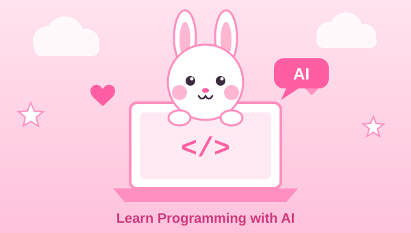

الاسم: مريم اشرف مسعد علي
الرقم الجامعي: 2500406

يتناول هذا البحث الدور الذي تلعبه أدوات الذكاء الاصطناعي التوليدي في تسهيل تعلّم البرمجة لدى المطورين المبتدئين. ويستعرض البحث التحديات الشائعة التي تواجه المتعلم في بداية رحلته، ثم يوضح الكيفية التي تعالج بها هذه الأدوات تلك التحديات، من خلال شرح الشيفرة بلغة بسيطة، وتفسير رسائل الأخطاء، وتوليد الأمثلة والتمارين، والعمل كمدرّس شخصي متاح على مدار الساعة.
كما يناقش البحث المخاطر المحتملة، وعلى رأسها الاعتماد الزائد على الأداة وما قد ينتج عنه من ضعف في مهارة حل المشكلات، إضافةً إلى احتمال حصول المتعلم على إجابات غير دقيقة. ويختتم بمجموعة من التوصيات العملية وخطة تعلّم مقترحة مدتها ثلاثون يومًا تجمع بين الاستفادة من الذكاء الاصطناعي والحفاظ على بناء الفهم الذاتي.
الكلمات المفتاحية: الذكاء الاصطناعي، تعلّم البرمجة، المطوّر المبتدئ، المساعدات البرمجية، هندسة الأوامر.
كانت البرمجة لعقود طويلة مجالًا يعتمد فيه المبتدئ على الكتب والدورات التعليمية والمنتديات. وكان العائق الأكبر أمامه هو الوقت الذي يضيع في البحث عن سبب خطأ بسيط، أو في فهم شرح كُتب لمن لديه خبرة سابقة أصلًا. ومع ظهور نماذج اللغة الكبيرة وأدوات المساعدة البرمجية، تغيّر هذا الواقع تغيّرًا جوهريًا: إذ أصبح بإمكان المتعلم أن يسأل سؤالًا بلغته الطبيعية ويحصل على شرح موجّه لمستواه.
وتبرز أهمية هذا الموضوع في العالم العربي بشكل خاص، حيث يعاني كثير من المتعلمين من قلة المحتوى التعليمي العربي المتخصص، ومن صعوبة المصادر الإنجليزية عند الانطلاق من الصفر. وتتيح أدوات الذكاء الاصطناعي الشرح بالعربية مع الإبقاء على المصطلحات التقنية بالإنجليزية، وهو ما يخفف حاجز اللغة بصورة واضحة.
يمكن للمتعلم لصق أي مقطع برمجي وطلب شرحه بمستوى مبسّط. وتكمن قيمة ذلك في أن الشرح يتكيّف مع مستوى السائل: فيمكن طلب «اشرحها كأني مبتدئ تمامًا» أو «اشرحها بتشبيه من الحياة اليومية». مثال:
total = 0
for price in [10, 20, 30]:
total = total + price
print(total)
يستطيع المساعد أن يشرح أن المتغير total يعمل كصندوق يبدأ فارغًا، وأن الحلقة تمرّ على كل سعر وتضيفه إلى الصندوق، وأن النتيجة النهائية 60 تُطبع في النهاية.
يُعدّ هذا من أكثر الاستخدامات فائدة للمبتدئ. فبدل البحث في مواقع متعددة، يلصق المتعلم رسالة الخطأ مع الشيفرة، فيحصل على تفسير لسبب المشكلة وطريقة إصلاحها. والأهم أن يطلب المتعلم من الأداة شرح «لماذا حدث الخطأ» وليس فقط «كيف أصلحه»، لأن ذلك هو ما يبني الفهم.
يتيح الذكاء الاصطناعي حوارًا تفاعليًا يتحمّل تكرار الأسئلة دون ملل أو إحراج. ويمكن توجيهه ليعمل بأسلوب المعلّم السقراطي، أي يطرح أسئلة موجّهة بدل تقديم الحل مباشرة. وقد اعتمدت بعض الجامعات هذا النهج في أدواتها التعليمية، ومنها أداة المساعد البرمجي في مقرر CS50 بجامعة هارفارد، المصمّمة لتوجيه الطالب دون كشف الحل الكامل.
بإمكان المتعلم أن يطلب تمارين تناسب مستواه وتركّز على نقطة ضعفه، مثل تمارين متدرجة على الحلقات التكرارية أو الدوال أو التعامل مع القوائم، مع حلول يطّلع عليها بعد المحاولة الذاتية.
يمكن للأداة أن تراجع شيفرة المبتدئ وتقترح تحسينات في التسمية والبنية وقابلية القراءة، وتشرح سبب كل اقتراح، وهو ما يشبه مراجعة الشيفرة (Code Review) التي لا تتاح عادةً للمتعلم المنفرد.
يستطيع المتعلم وصف هدفه (موقع ويب، تطبيق، تحليل بيانات) ووقته المتاح، فيحصل على مسار مرتب من المفاهيم والمشروعات المصغرة، بدل التخبط بين المصادر.
يسهّل الذكاء الاصطناعي فهم التوثيق الرسمي (Documentation) المكتوب بالإنجليزية، عبر تلخيصه وتبسيطه وشرحه بالعربية، كما يساعد في تحويل فكرة من لغة برمجة إلى أخرى لفهم الفروق بينها.
تتعدد الأدوات التي يمكن للمبتدئ الاستفادة منها، ويلخص الجدول التالي أهم الفئات. وتجدر الإشارة إلى أن هذا المجال سريع التغيّر، لذا يُنصح بمراجعة المزايا والأسعار الحالية قبل الاشتراك.
جدول (1): أبرز أدوات الذكاء الاصطناعي المساندة لتعلّم البرمجة
| الأداة / الفئة | نوعها | أبرز فائدة للمبتدئ |
|---|---|---|
| مساعدات المحادثة (مثل ChatGPT، Claude) | محادثة عامة | شرح المفاهيم، تفسير الأخطاء، توليد التمارين، الحوار بالعربية |
| GitHub Copilot | إكمال تلقائي داخل المحرر | اقتراح الشيفرة أثناء الكتابة وشرح المقاطع داخل بيئة التطوير |
| Cursor وأمثاله | محرر شيفرة مدعوم بالذكاء الاصطناعي | التفاعل مع المشروع كاملًا وطرح أسئلة عن ملفاته |
| Replit | بيئة تطوير سحابية | التجربة الفورية من المتصفح دون إعداد بيئة محلية |
| أدوات الجامعات التعليمية (مثل CS50 Duck) | مدرّس موجّه | إرشاد تدريجي دون إعطاء الحل الجاهز |
جودة الإجابة تتناسب مع جودة السؤال. وفيما يلي نماذج لأوامر (Prompts) فعّالة للمبتدئ:
«اشرح لي مفهوم الدوال (Functions) في بايثون كأنني مبتدئ تمامًا، مع تشبيه من الحياة اليومية، ثم أعطني مثالًا بسيطًا وتمرينًا صغيرًا أحلّه بنفسي.»
«هذه شيفرتي وهذه رسالة الخطأ. لا تعطني الحل مباشرة: اشرح لي أولًا معنى الرسالة وأين المشكلة، ثم أعطني تلميحًا لأصلحها بنفسي.»
«اسألني خمسة أسئلة متدرجة الصعوبة عن الحلقات التكرارية، واحدًا تلو الآخر، وصحّح إجاباتي مع التوضيح.»
«راجع هذه الشيفرة واقترح تحسينات في الأسماء والتنظيم، واشرح سبب كل تحسين بجملة قصيرة.»
أكبر خطر على المبتدئ هو أن يتحول إلى ناسخ للحلول دون فهم. فإذا كان يطلب الحل الجاهز في كل مرة، فلن يبني «عضلة» التفكير البرمجي، وسيعجز عن العمل حين تغيب الأداة أو حين تكون المشكلة جديدة. والحل هو محاولة المسألة أولًا ثم الاستعانة بالأداة.
قد تقدّم النماذج أحيانًا شيفرة تبدو سليمة لكنها تحتوي على أخطاء، أو تستخدم مكتبات ودوال غير موجودة أو قديمة، والمبتدئ أقل قدرة على اكتشاف ذلك. لذلك يجب تشغيل كل شيفرة واختبارها، ومقارنة المعلومات المهمة بالتوثيق الرسمي.
ينبغي ألا يشارك المتعلم مفاتيح الواجهات البرمجية (API Keys) أو كلمات المرور أو بيانات العملاء داخل المحادثة. كما أن الشيفرة المولّدة قد تحمل ثغرات أمنية، وهو أمر يستلزم الحذر خصوصًا في المشروعات الحقيقية.
قراءة شرح واضح قد تعطي شعورًا بالإتقان، بينما لا يتحقق الفهم الحقيقي إلا بالتطبيق وكتابة الشيفرة بيد المتعلم. لذلك يجب أن يعقب كل شرح تمرين عملي.
جدول (2): خطة التعلم المقترحة لمدة 30 يومًا
| الفترة | المحتوى |
|---|---|
| الأسبوع الأول | الأساسيات: المتغيرات، أنواع البيانات، الشروط. استخدم الأداة لشرح كل مفهوم، ثم حل 5 تمارين يوميًا بنفسك. |
| الأسبوع الثاني | الحلقات والدوال والقوائم. اطلب تمارين متدرجة، وجرب تفسير الأخطاء بأسلوب التلميحات. |
| الأسبوع الثالث | التعامل مع الملفات والبيانات ومكتبة أو إطار واحد. ابدأ مشروعًا صغيرًا (مثل حاسبة أو قائمة مهام). |
| الأسبوع الرابع | إكمال المشروع، ثم مراجعة الشيفرة مع الأداة وتحسينها، وكتابة ملخص لما تعلمته بأسلوبك. |
يخلص البحث إلى أن الذكاء الاصطناعي أداة تعليمية قوية تقلّل زمن الإحباط في بداية التعلّم وتتيح تجربة شخصية متكيّفة مع مستوى المتعلم ولغته. وتتفق أدبيات حديثة حول المساعدات البرمجية على أنها ترفع سرعة إنجاز المهام، غير أن مكسب السرعة لا يعني بالضرورة مكسبًا في الفهم، ولذا تتوقف الفائدة التعليمية على طريقة الاستخدام.
لقد أصبح الذكاء الاصطناعي عنصرًا أساسيًا في رحلة تعلّم البرمجة، فهو يختصر الطريق ويخفف الحواجز ويمنح المبتدئ مرشدًا متاحًا في أي وقت. ومع ذلك فإن جوهر البرمجة يظل مهارة تُكتسب بالممارسة والتفكير. والمتعلم الناجح هو الذي يستخدم الأداة ليفهم أكثر لا ليفكر أقل، فيجمع بين سرعة الذكاء الاصطناعي وعمق الفهم الذاتي.